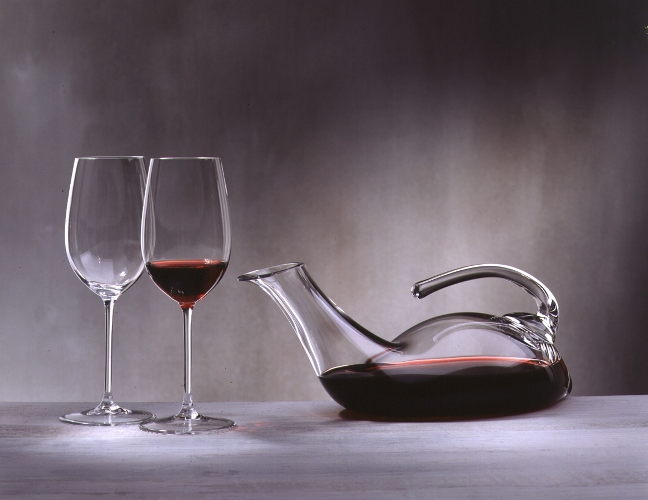
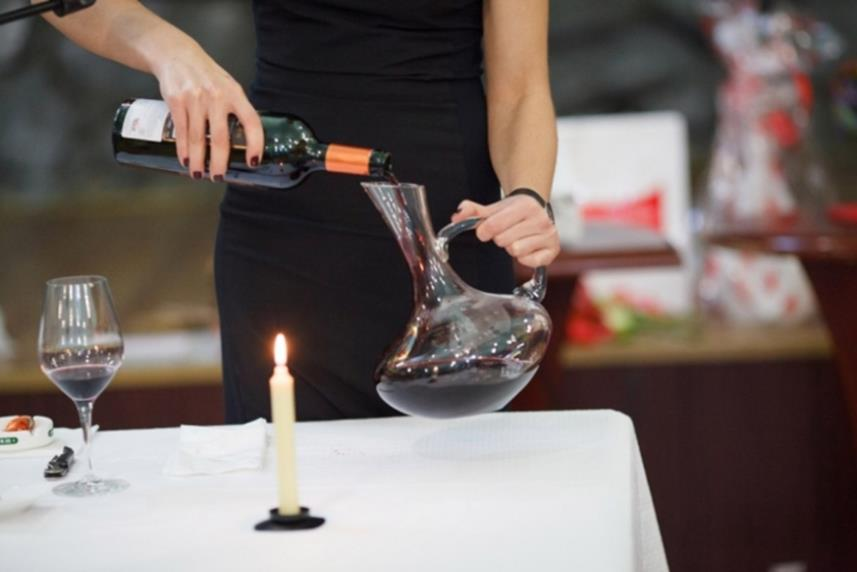
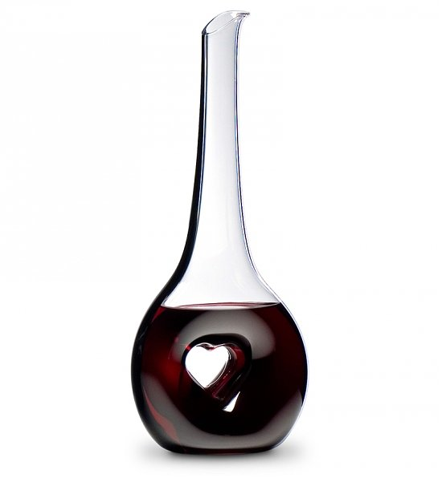
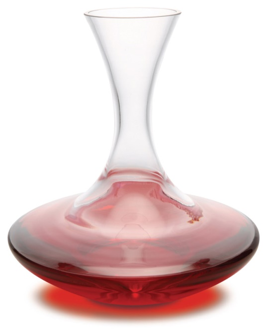
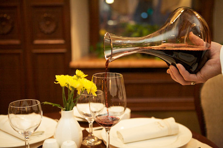
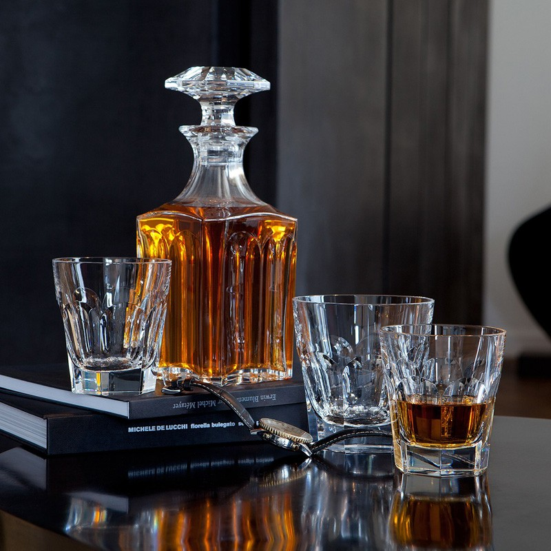
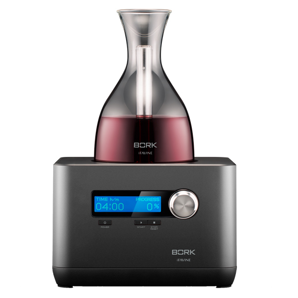
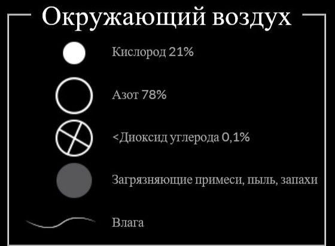

Декантация
"Я предпочитаю декантировать вина, как молодые, так и старые. Это знак уважения старым выдержанным винам и знак веры в молодые"
Кристиан Моэкс
Владелец знаменитого бордосского Дома Jean-Pierre Moueix
Попав в ресторан высокого класса, вы обязательно столкнетесь с процессом декантации вина, ведь в таких заведениях следят за тем, чтобы каждый напиток раскрыл свои вкусовые качества максимально полно. Именно для этого и нужна декантация, представляющая собой насыщение алкоголя кислородом.
Для неспециалистов это выглядит так — вино переливается из родной бутылки в специальный графин необычной формы и подается на стол. Эксперты, в свою очередь, знают, что процесс декантации включает в себя много тонкостей и позволяет не только проветрить вино, но и удалить осадок, который особенно характерен для винтажных напитков.
Эта практика очень распространена, но в последнее время она вызывает многочисленные споры: одни специалисты утверждают, что это вредит вину, другие же стоят на противоположной точки зрения, полагая, что это следует делать с любым вином, даже шампанским. Поэтому многие ценители вина испытывают полнейшее недоумение, не понимая, следует ли им переливать его в иную емкость или нет. Сторонники декантации считают, что она служит трем целям. Первое, дает возможность отделить осадок в вине. Как они доказывают, что это обычное явление, и факт осадка не означает, что в процессе изготовления были совершены ошибки, или же, что оно испортилось.
Их противники согласны с тем, что из подаваемого вина следует убрать осадок. Однако, они считают, что сам факт его присутствия чаще свидетельствует, о небрежности производителя в процессе производства. В недалеком прошлом, еще до начала 1940 года французы поговаривали: “На самом дне бутылки вина всегда найдется, что выпить и чем закусить”. Осадок достаточно часто можно встретить даже в белом вине. Осадок в красном вине, даже не совсем старом, прилипал к стенкам бутылок не смываемым слоем. Тогда технологий, позволяющие предотвратить его образование, не было, и потребителям давали возможность удалять его самим. Сейчас такие технологии существуют, но некоторые виноделы и сегодня работают по старинке.
Второй аргумент сторонников декантации состоит в том, что в вине непрерывно происходят окислительно-восстановительные процессы. При хранении вина в бутылке равновесие смещается в сторону восстановления, и вино начинает “задыхается”, а при переливании его в графин, оно начинает немного окисляется, или как говорят - “дышит”. По их мнению это позволяет убрать неприятный запах и дает букету вина шанс “раскрыться”.
Насытить напиток кислородом полезно. Этим пользуются не только производители вин, но и коньяка, а также виски.
- Аэрация вина — и есть тот самый процесс проветривания, который позволяет решать несколько проблем:
- снизить концентрацию сульфитов у винтажных вин. Дело в том, что состав напитка постоянно меняется в процессе взросления в бутылках, поэтому и образовываются сульфиты. Избавиться от них можно, проветрив напиток;
- смягчить ярко выраженные танины, характерные для молодых вин.
Сам процесс аэрации можно считать запущенным сразу после вынимания пробки.
Большинству красных вин аэрация просто необходима. К таким напиткам относятся каберне, шираз, а также кьянти и бароло. В то же самое время многим белым винам и утонченным бургундским напиткам аэрация не нужна.
Их оппоненты возражают, говоря, что в вино в бутылке просто не успевает “задохнуться”. Или же это ему абсолютно не приносит вреда, и переливание вина в графин попросту бессмысленно. Кроме того имеются вина, которые в при такой процедуре могут “сломаться”, или проще говоря, прокиснуть.
В-третьих, декантация, по утверждению ее сторонников, дает возможность сделать подачу вина еще более эстетичным зрелищем. Благодаря хрустальному графину с благородными формами и всей сервировки стола процедура подачи становится более изысканной. Конечно, у сторонников подачи вина в бутылке и на это есть возражения. Основное из них то, что бутылка с этикеткой, а даже пробка - это определенный паспорт вина, характеристика его подлинности и качества.
Одно следует точно одни вина нужно декантировать, другие ни в коем случае. Самое главное - отличить первые от вторых. Особенно важно выбрать необходимый момент для декантации. Перелить за час или даже больше в графин до подачи можно молодое вино с его прочной структурой при этом можно не опасаться за его чрезмерное окисление. Для этого используйте широкие графины, для увеличения площади соприкосновения с воздухом, и не бойтесь переливать его булькающей струей. Молодое вино часто бывает излишне танинным, и именно после такой процедуры оно всегда “округляется”, и при этом становится более мягким. Если с молодым вином можно обращаться таким способом, то с выдержанным вином нужно соблюдать некую осторожность, так как оно может достаточно быстро окислиться. За 5-6 часов (а для некоторых сортов лучше за несколько суток) до декантации подаваемую бутылку нужно расположить вертикально, чтобы весь осадок опуститься на дно. Иначе вино вам придется подавать в “люльке”, в которой бутылка будет лежать горизонтально, почти в том же положении, как в погребе. Для подачи выдержанного вина применяют графины с не слишком широким горлышком. Существует мнение, что, чем длительнее время вино будет “дышать”, тем оно станет лучше очень неверно. Именно преждевременная декантация окончательно и безнадежно портила коллекционные и дорогие вина.
Перед всей процедурой только попробовав вино, можно знать наверняка, нужно ли его предварительно откупоривать и наполнять им графин. У соммелье есть шутка: бутылки нужно сразу открывать по две: вначале - чтобы узнать, можно ли вино декантировать, вторую бутылку - чтобы пить. В этой шутке есть доля истин. Иногда нужно предложить гостям две бутылки, для сравнения, одного и того же вина, при этом одну декантировать, а другую открывать перед подачей к столу.
Процесс декантации важен для вина, ведь он помогает ему раскрыться. Однако если в вашем распоряжении нет хорошего экземпляра самого напитка, то ждать чудес не стоит.
Подбираем декантер
Существующие варианты декантеров очень многообразны. Они могут иметь как классическую форму, так и экстравагантную. Все зависит лишь от особенностей процесса аэрации, которые необходимы тому или иному вину.
Наиболее классический вид декантера — широкая чаша, узкое прямое горлышко и слегка скошенный и расширенный верх. Подобные сосуды используют для молодых вин или напитков с не интенсивным вкусом. Широкая чаша позволяет сконцентрировать ароматы внутри емкости и сохранить их до подачи на стол.
 Винтажные вина, которым не нужна аэрация, так как она проходит естественным путем — через пробку в течение срока выдержки, нужно подавать в декантере с очень мягкими формами. Кроме того переливать напиток придется очень медленно и осторожно, чтобы не допустить «расслаивания» вкуса.
Выбирая декантер важно обратить внимание и на то, из чего сосуд сделан. Только высококачественный хрусталь без свинцовых примесей может стать основой для декантера. Ценители отрасли рекомендуют обратить внимание на продукцию от Riedel, выделяющуюся изящностью и уникальностью форм.
Декантеры используют для сервировки и других алкогольных напитков - водки, коньяка, виски.
Декантер для виски и коньяка несколько отличается от декантера для вина. Это, как правило, округлый или квадратный графин с чуть расширенными «плечиками» и невысоким горлышком.
Интеллектуальный декантер BORK Z600 iFavine

BORK Z600 – решение, позволяющее снять все ограничения, имеющиеся при
обычном декантировании.
Это первый интеллектуальный декантер, использующий революционную технологию, которая позволяет переосмыслить опыт декантирования, чтобы улучшить вкус и аромат вина всего за несколько минут.
Кроме того, декантер BORK Z600 размягчает танины и переводит вино в стадию зрелости, на что обычно требуются годы выдерживания в подвалах.
Уникальная технология. Очищенный и высококонцентрированный кислород
Декантер BORK Z600 фильтрует окружающий воздух, удаляя любые примеси (влагу, пыль, запахи) и изолирует кислород от азота и диоксида углерода. Он аэрирует вино постоянным потоком очищенного и высококонцентрированного кислорода благодаря своей передовой системе извлечения кислорода, которая не использует никаких химикатов.
Постоянный поток очищенного и концентрированного кислорода
Декантирование вина очищенным кислородом значительно повышает эффективность данного процесса с точки зрения времени и качества:
- Деканер BORK Z600 удаляет большинство загрязнителей воздуха и влагу
- Постоянный поток кислорода смягчает проблемы при декантировании вина в местах с перепадами давления воздуха
- Эта передовая система гарантирует, что любое вино будет подаваться с неизменным качеством, в какой бы точке мира его не декантировали
Патентованный стеклянный декантер
Очищенный и высококонцентрированный кислород проходит вверх по специальной трубке внутри патентованного декантера. Затем он меняет направление и проходит вниз, проникая в каждую молекулу вина.
Мягкие танины и обогащенный аромат
Специально разработанный стеклянный декантер равномерно распределяет кислород по всему объему вина, а не только по поверхности:
- Он осуществляет насыщение кислородом
- Благодаря смягчению танинов, обеспечивает приятные вкусовые ощущения
- Он облагораживает все ароматы, раскрывая полный потенциал вина